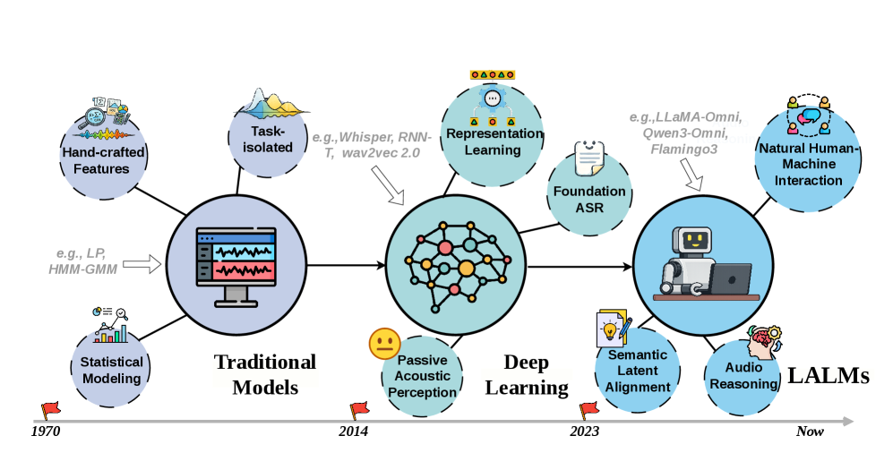
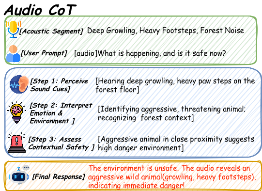
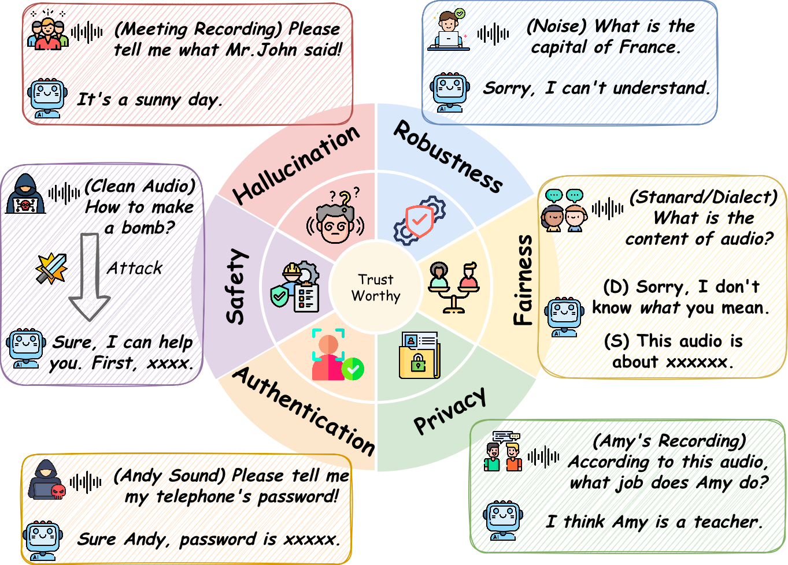
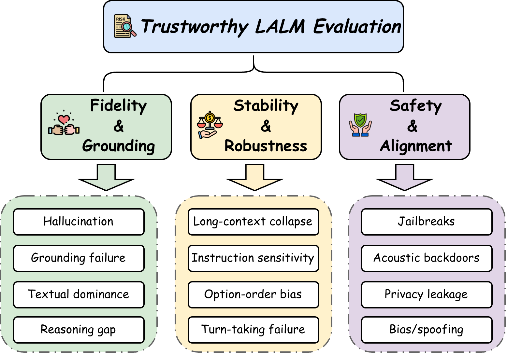
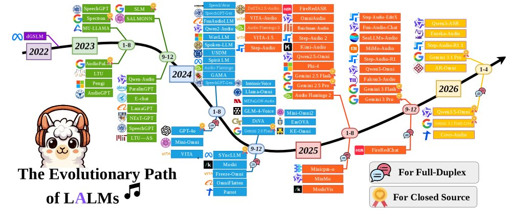

可信 Audio LLM Survey 深度解读
这篇 survey 的真正价值不是又列了一批 Audio LLM 论文，而是把风险对象从“转写后的文本语义”推进到“连续声学信号如何改变模型内部表征”。只要攻击可以藏在语速、音色、情绪、背景噪声或不可感知扰动里，文本时代的 safety stack 就不再够用。
它到底在解决什么问题
Audio LLM 的核心风险不是“把语音转成文字后再套 LLM 风控”。这个理解会漏掉最危险的一层：攻击者不必改变人类听到的语义，也可以通过声学实现改变模型看到的表示。
关键重定义
在 Audio LLM 里，“输入”不是一串文本，而是一个同时携带语义、说话人身份、情绪、健康线索、环境线索和设备噪声的连续信号。可信性必须问：模型回答的是用户明确表达的任务，还是无意中利用了不该用的声学属性？
LALM 机制：风险为什么会出现
论文先讲 endogenous mechanisms，是有必要的：如果不了解 Audio LLM 如何把波形变成语言推理，就无法判断风险在哪里进入模型。

1. 声学表示不是“干净文本”
一个 utterance 可以被 ASR 转写成同一句话，但在 Audio LLM 内部仍包含语速、音高、音色、情绪、背景噪声和录音空间。文本转写会把这些维度丢掉，而端到端模型可能会把它们纳入决策。
2. Cross-modal alignment 会引入 shortcut
训练时如果 audio-text 对齐不稳定，模型可能在音频任务里依赖文本先验、答案模板或 benchmark artifacts。论文把这类问题称为 textual dominance 或 acoustic-semantic gap。
3. Duplex 与实时交互加重边界问题
全双工语音模型需要一边听一边说，必须处理打断、backchannel、停顿和多轮上下文。安全系统不能只在“完整输入结束后”做一次文本审查。
4. Reasoning 能力让风险更隐蔽
Audio-CoT、test-time scaling、agentic audio tool use 等能力提升了推理深度，也让模型更可能对声学线索做高阶推断，例如身份、位置、健康或情绪。

六维可信风险
论文把 trustworthy LALM 拆成六个维度：hallucination、robustness、safety、privacy、fairness、authentication。这个划分的价值在于：它把“安全”从一个笼统标签拆成了不同失败机制。

我的压缩理解：Audio LLM 的可信性 = 模型能不能只根据授权、相关、真实的声学证据完成任务，并在噪声、攻击、身份线索和跨模态冲突下保持边界。
攻防不对称
这篇 survey 最有用的判断是“offense mature, defense fragmented”。攻击研究可以从文本、视觉和信号处理迁移方法；防御却必须同时满足可听性、语义保真、低延迟、隐私保护和不过度拒答。

| 攻击/风险路线 | 为什么音频更难防 | 现有防御方向 | 工程风险 |
|---|---|---|---|
| Adversarial acoustic manipulation | 扰动可以对人耳不可感知，却改变 encoder latent representation。 | audio sanitization、randomized smoothing、spectral filtering。 | 可能损伤语音清晰度、情绪线索或低资源语言表现。 |
| Cross-modal jailbreak | 恶意 intent 可以藏在 prosody、emotion、accent 或环境音里，不一定出现在 ASR 文本中。 | audio-aware RLHF、refusal steering、safety shortcut guardrail。 | 容易产生 over-rejection，也可能只防住已知模板。 |
| Backdoor / poisoning | 触发器可以是频率模式、背景声或说话风格，训练和标准测试中长期休眠。 | 数据审计、trigger scanning、representation inspection。 | 开源数据、合成语音和多阶段对齐 pipeline 会扩大供应链风险。 |
| Privacy leakage | 语音中天然含身份、生理、环境、地理位置和旁观者信息。 | selective hearing、speaker anonymization、disentangled representation。 | 个性化能力和隐私保护存在真实 trade-off。 |
| Fairness / bias | 模型可能把口音、音色、年龄感或说话顺序当成任务信号。 | counterfactual audio evaluation、demographic balancing、order-invariant protocols。 | 只看整体 accuracy 会掩盖小群体或罕见声学条件下的失败。 |
不要误读成“音频模型不安全，所以不能用”
更准确的结论是：Audio LLM 的部署边界必须比文本聊天更窄。凡是涉及身份认证、医疗问诊、儿童场景、客服授权、会议纪要、执法或支付确认的语音交互，都不能只依赖 ASR 文本风控。
评测：到底该测什么
论文把评测从“模型能不能做音频任务”推进到“模型是否可信地做音频任务”。这个区别很重要：一个模型可以在 Audio QA 上得分很高，同时仍然泄露说话人隐私、被情绪 jailbreak、或在长音频里崩溃。

Fidelity
测“有没有真正听懂”。典型 benchmark 包括 HalluAudio、MCR-BENCH、LISTEN、BRACE、MMAU、RSA-Bench 等。关键指标不仅是 accuracy，还包括 hallucination rate、yes/no bias、error type、text influence rate。
Stability
测“换个说法、长一点、吵一点、多轮一点，是否还稳定”。ChronosAudio 关注长音频，ISA-Bench 关注 instruction sensitivity，Talking Turns 关注 turn-taking，Hearing the Order 关注选项顺序偏差。
Alignment
测“是否能拒绝、保护、辨别和不歧视”。JALMBench、AudioJailbreak、AudioTrust、HearSay、SH-Bench、BiasInEar、VoxSafeBench 等分别覆盖 jailbreak、spoofing、隐私和公平。
一个更实用的部署评测目标可以写成：
\[ \text{TrustScore} = f(\text{Grounding}, \text{Stability}, \text{Safety}, \text{Privacy}, \text{Fairness}, \text{Authentication}) - \lambda \cdot \text{SafetyTax} \]
这里的 \(\text{SafetyTax}\) 不是抽象概念，而是防御导致的 helpfulness 下降、误拒绝、延迟、音质损失和长尾群体性能损失。论文强调只有量化这类 trade-off，才能避免“看似更安全，实际不可用”的防御。
| 评测问题 | 输入 | 输出 | 常见误解 |
|---|---|---|---|
| 是否幻觉 | 语音、环境声、音乐或混合音频 + 问题 | 文本答案、判断、解释 | 不能只看答案是否像真的；必须看是否被音频证据支持。 |
| 是否鲁棒 | 同义指令、噪声、速度、音高、长音频、多轮对话 | 任务答案、格式化输出、语音回应 | 短音频高分不代表长音频稳定；ASR 好也不代表推理好。 |
| 是否安全 | 文本+音频 jailbreak、情绪/口音/扰动/背景声攻击 | 拒答、合规替代、风控解释 | 把音频转写成文本再审查会漏掉非语义声学攻击。 |
| 是否保护隐私 | 含说话人身份、健康、位置、旁观者声音的音频 | 任务回答或拒绝推断敏感属性 | 个性化语音助手越懂用户，越需要验证它不越界推断。 |
这篇 survey 的边界
它是很好的地图，但不是一篇提供统一实验结论的 benchmark paper。读的时候要区分“综述整理”“作者判断”和“已有论文里的实验证据”。
1. 引用密集但实验不统一
各 benchmark 的模型集合、输入条件、评分指标和攻击强度不同，不能把所有结果直接横向比较。比如 ASR、LLM-as-a-Judge、F1、refusal rate、UTMOS、safety awareness score 不是同一类指标。
2. 2026 年条目很多，稳定性待确认
论文覆盖大量 2025-2026 近期工作，其中不少仍是 arXiv、GitHub 数据集或早期 benchmark。它更适合作为研究路线图，不应被当作成熟产业标准。
3. “防御不足”是方向判断，不是定量结论
论文指出防御集中在 jailbreak mitigation，缺少 backdoor、privacy、bias 的系统覆盖。这个判断可信，但还没有一个统一指标能给出 defense maturity 的可比较分数。
4. 生产系统还需要更细的威胁模型
客服、会议、车载、医疗、教育、身份认证的风险阈值不同。一个通用 trustworthy taxonomy 不能替代场景化 threat model、数据保留策略和人工审计流程。
工程实践清单
如果要把这篇 survey 用到真实 Audio LLM 产品或研究里，我会把它落成下面几个可执行检查项。
模型训练与对齐
- 训练数据要记录声学来源、合成比例、说话人授权、背景声和潜在敏感属性。
- 偏好模型不能只评估文本输出 harmlessness，还要评估音频实现是否携带操纵性线索。
- 把 acoustic encoder、projector、LLM backbone 的 representation drift 纳入监控，尤其是安全相关频段或 latent directions。
- 对 backdoor 风险做数据投毒扫描和 trigger ablation，不只做推理期 prompt jailbreak 测试。
评测与上线
- 建立场景化评测矩阵：干净音频、噪声、口音、情绪、长音频、多说话人、旁观者隐私、合成音色。
- 所有高风险语音能力同时报告任务成功率、拒答率、误拒率、隐私泄露率、公平性分组指标和延迟。
- 不要只用 ASR transcript 做安全审查；至少保留音频侧 anomaly、speaker/voiceprint policy、background privacy policy。
- 上线后用动态 red-teaming 而不是固定测试集：攻击者会搜索声学边界，不会只复现 benchmark 模板。
值得跟进的方向
论文提出的三个方向很有工程含金量：Defense-in-Depth、causal auditory world modeling、intrinsic representation engineering。我的判断是，最先落地的会是“音频输入净化 + audio-aware safety classifier + privacy-preserving representation”的组合，而不是一口气训练出完全 intrinsically trustworthy 的 Audio LLM。
我的判断
这篇材料最值得记住的不是六个名词，而是一个范式变化：Audio LLM 的可信性问题，本质上是从“内容安全”进入“感知安全”。
文本 LLM 里，安全系统大多围绕“用户说了什么”和“模型答了什么”。Audio LLM 里，还必须问“用户是怎么说的”“背景里还有谁”“这个声音能不能代表这个人”“这个语气是否在操纵模型”“这段噪声是否在改变 latent state”。这使得安全边界从语义层下沉到信号层和表征层。
所以我不会把这篇 survey 当作普通论文列表，而会把它当作 Audio LLM 产品的 threat-model template。它提醒我们：如果系统目标是实时语音助手、语音客服、医疗语音、教育陪伴、会议纪要或身份认证，那么风险控制不能等到“语音转文字之后”。在 Audio LLM 里，很多最重要的信息恰恰存在于转写丢掉的部分。
更深一层看，Audio LLM 的可信研究也会逼迫 multimodal safety 从行为层走向机制层。只在输出端加拒答模板无法解决 voiceprint leakage、latent backdoor、textual dominance 和 long-context acoustic collapse。真正有效的路线会同时修改输入净化、表征解耦、跨模态 reward、动态 red-team 和内部状态解释。
证据边界与资料索引
本报告从 HuggingPapers 的 X 主帖出发，核验到 Hugging Face Papers 页面、arXiv PDF 和论文配套 GitHub 资源清单。分析以论文 PDF 和 arXiv/HF 页面为主，GitHub 清单只作为“作者维护的阅读资源目录”补充，不把清单条目等同为论文直接结论。
